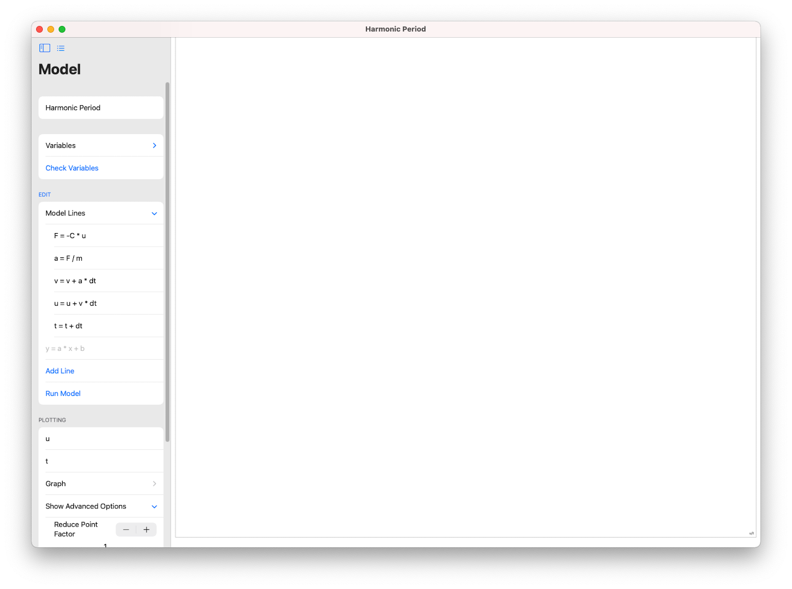
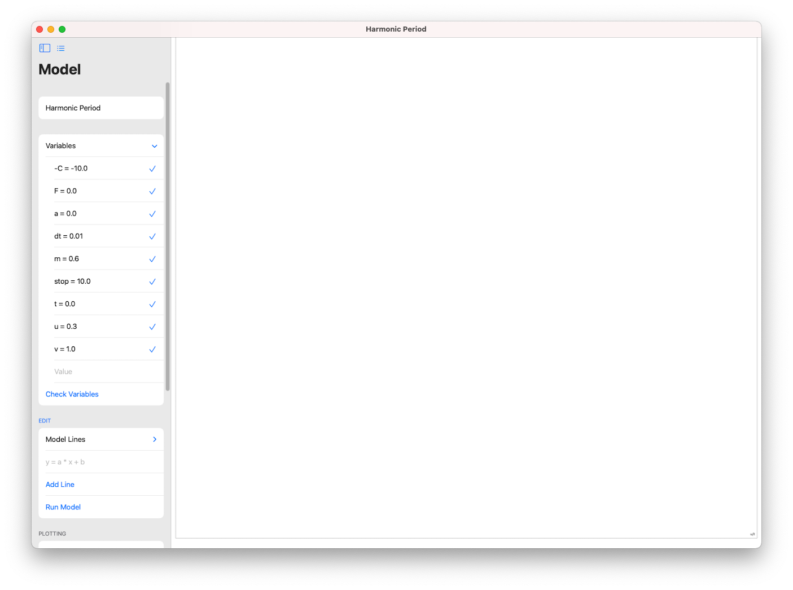
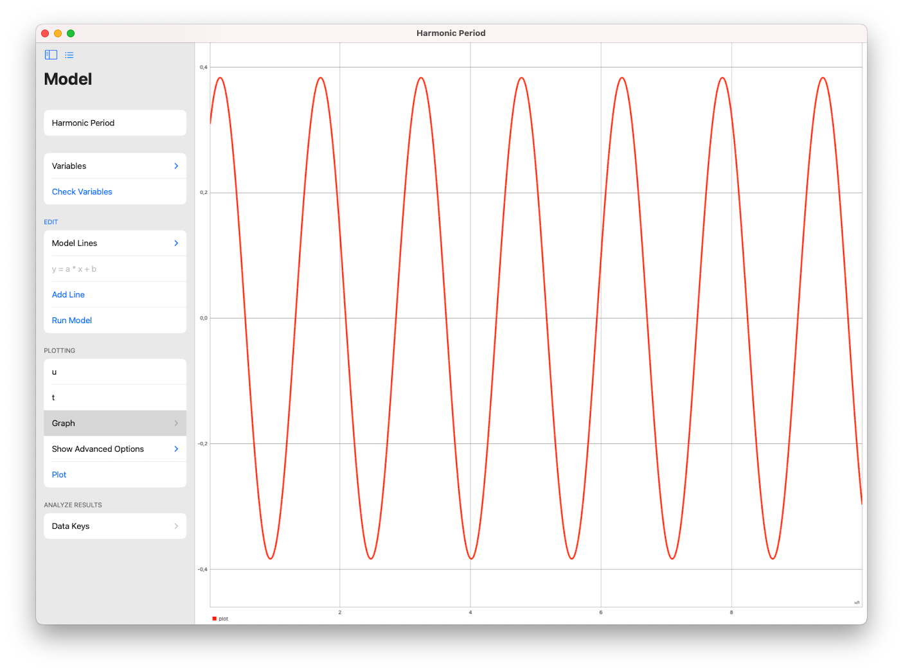

| Documentation |
|---|
| Syntax and Operations |
| Variables |
| Limitations |
| Shortcuts |
| Calculator | Download for Mac |
| Update 0.4 |
To make a model in SwiftPlot there are a few steps involved, from modelling lines to analyzing it will be explained. To get started open SwiftPlot. You should now be greeted with a screen saying Welcome to SwiftPlot. To follow along press New. Then go one by one through the pages below. Good luck!
version 0.1 - 0.6.1
A model in SwiftPlot is based around formula's. To make a model you'll need to have those at hand. In this tutorial we will be making a model of a harmonic period, the time required for a string to go up and down.
The formulas in play:
> F = C * u
> a = F / m
> vnew = vold + a * dt
> unew = uold + v * dt
> tnew = told + dt
In SwiftPlot the = token means "will be" instead of "equals". Therefore vnew and vold should be replaced with v. The same is true for all other formulas with old and new in them. To add Model Lines in SwiftPlot, press the arrow right of Model Lines to drop down the Model Lines. In the textfield type the formula and press "Add Line". When done continue to Variables.
A model in SwiftPlot is based around formula's. To make a model you'll need to have those at hand. In this tutorial we will be making a model of a harmonic period, the time required for a string to go up and down. These formula's need values to start with. In SwiftPlot this is done in the Variables menu.
For this step the Model Lines must already be in place. First: press "Check Variables". Now all variables should be visible. Variables named to real numbers should automatically be assigned the correct value. Now it's time to assign values to the remaining variables. Type a value in the textfield and click on the variables to which that value should be assigned. When all variables are assigned the correct value you can continue to Plotting.
A model in SwiftPlot is based around formula's. To make a model you'll need to have those at hand. In this tutorial we will be making a model of a harmonic period, the time required for a string to go up and down. To analyze the results of your model you can do two things: 1. plot the results into a graph and 2. see all individual values.
For this step the Model Lines and Variables must already be in place. To start press "Run Model". First we'll see the individual results and second we will plot them into a graph.
Click on "Data Keys" and you'll be presented with the results of your model. Take note that only the variables that did change will be listed more than once.
Next up is making one of those shiny graphs. By default the y-axis is set to dt. In the textfield type the variable that should be plotted in the y-axis. The x-axis is set to t. In the textfield type the variable that should be plotted on the x-axis. For the example set the y-axis to u and the x-axis to t. Now click "Plot" and then click on "Graph". You should now be presented with a shiny graph.
